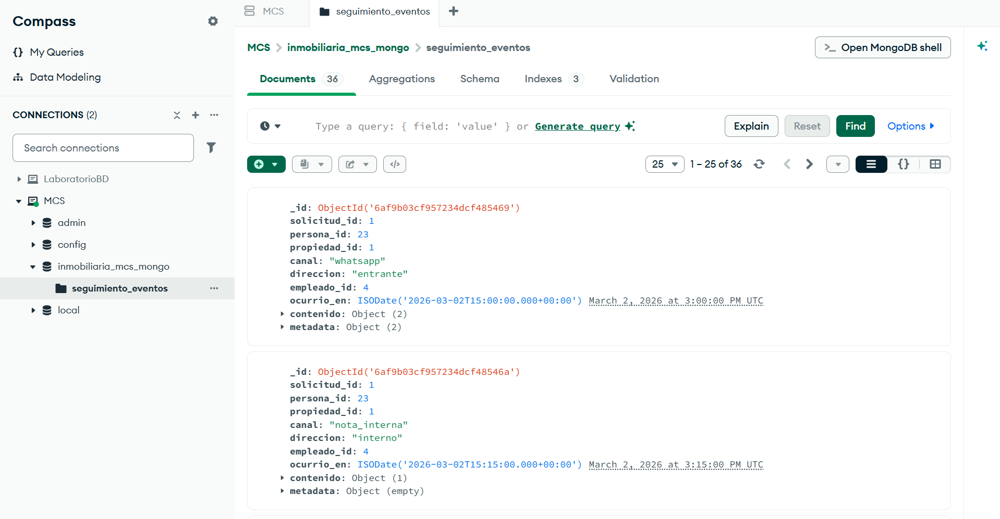
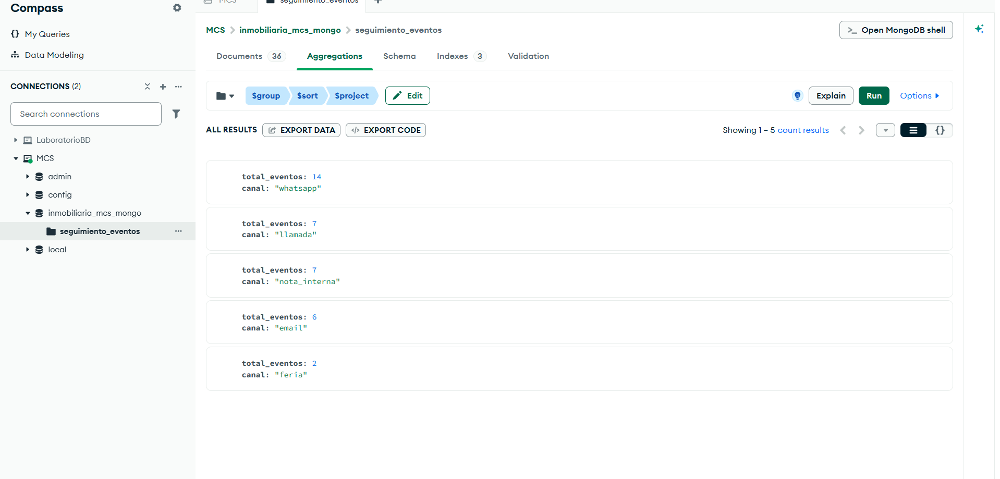
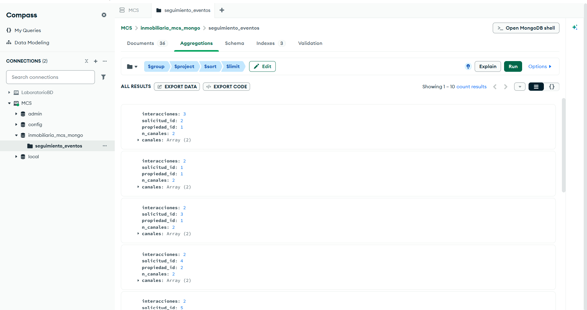

Seguimiento en MongoDB
Equipo: Harold Burgos, Sofía Camelo, Juan Triana Base: inmobiliaria_mcs_mongo Colección: seguimiento_eventos Referencia relacional: PostgreSQL inmobiliaria_mcs (solo los identificadores enteros)
1. Por qué este fragmento va en NoSQL (y no en PostgreSQL)
En el modelo relacional las visitas son una actividad con fecha, duración y calificación. En la operación el asesor registra además:
- mensajes de WhatsApp con texto libre y metadatos variables;
- llamadas sin visita presencial;
- notas internas con campos opcionales (sentimiento, URL de adjunto, duración).
El esquema cambia según el canal y el historial crece sin tocar la tabla visitas. Por eso este fragmento vive en MongoDB: documentos con contenido y metadata flexibles, y los mismos solicitud_id, persona_id y propiedad_id de PostgreSQL.
No copiamos personas, propiedades ni campañas. Solo guardamos esos identificadores para cruzar después los dos sistemas.
2. Diseño del documento
{
"solicitud_id": 2,
"persona_id": 24,
"propiedad_id": 1,
"canal": "whatsapp",
"direccion": "entrante",
"empleado_id": 5,
"ocurrio_en": { "$date": "2026-03-05T14:30:00Z" },
"contenido": {
"resumen": "Pide visita fin de semana",
"mensaje": "¿Pueden mostrar el apartamento el sábado en la mañana?"
},
"metadata": {
"duracion_seg": null,
"sentimiento": "positivo",
"adjuntos": []
}
}| Campo | Obligatorio | Descripción |
|---|---|---|
solicitud_id | sí | FK lógica → solicitudes_propiedad |
persona_id | sí | Prospecto |
propiedad_id | sí | Inmueble de la oportunidad |
canal | sí | whatsapp, llamada, email, nota_interna, feria |
direccion | sí | entrante / saliente / interno |
empleado_id | no | Asesor que registró o atendió |
ocurrio_en | sí | Fecha del hecho |
contenido | sí | Subdocumento variable por canal |
metadata | no | Extensión sin migración de esquema |
3. Índices
| Índice | Campos | Uso |
|---|---|---|
idx_solicitud_fecha | { solicitud_id: 1, ocurrio_en: -1 } | Timeline de una oportunidad (pregunta 4–5 ampliada) |
idx_canal_fecha | { canal: 1, ocurrio_en: -1 } | Agregación por canal (complemento pregunta 6) |
4. Cómo ejecutar en su máquina
Opción A — mongosh
mongosh
load("ruta/completa/codigo/mongodb/01_setup_y_carga_f6.js")
load("codigo/mongodb/02_crud_f6.js")
load("codigo/mongodb/03_agregaciones_f6.js")En Windows, desde la carpeta del proyecto:
mongosh --file "codigo\mongodb\01_setup_y_carga_f6.js"Opción B — MongoDB Compass
- Crear base
inmobiliaria_mcs_mongo. - Import →
codigo/mongodb/seguimiento_eventos_seed.json→ colecciónseguimiento_eventos. - Indexes → crear los dos índices anteriores.
- Pestaña Aggregations → pegar pipelines de
03_agregaciones_f6.js.
5. CRUD (archivo 02_crud_f6.js)
Demuestra Create, Read, Update, Delete sobre la misma colección, con comentarios que referencian solicitud_id existentes en PostgreSQL.
6. Dos agregaciones (archivo 03_agregaciones_f6.js)
| # | Pregunta de negocio | Pipeline |
|---|---|---|
| A1 | ¿Qué canales concentran más eventos de seguimiento? | $group por canal + $sort |
| A2 | ¿Qué oportunidades (solicitud_id) tienen más interacciones registradas? | $group + $sort + $limit |
Estas dos agregaciones complementan las preguntas de seguimiento y de campañas: las visitas siguen en PostgreSQL; aquí contamos el resto de contactos.
7. Lo que vimos al cargar la colección
Cargamos 36 eventos con scripts/seguimiento_eventos_seed.json. Las fechas quedaron como fecha de MongoDB, no como texto.

La agregación por canal dio: WhatsApp 14, llamada 7, nota interna 7, correo 6 y feria 2.

La solicitud 2 sobre la propiedad 1 es la que más interacciones tiene (3). El resto del top tiene 2.
